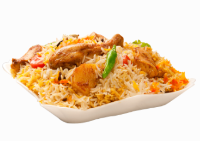
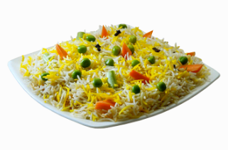
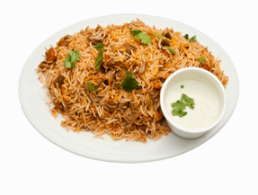
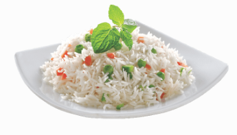
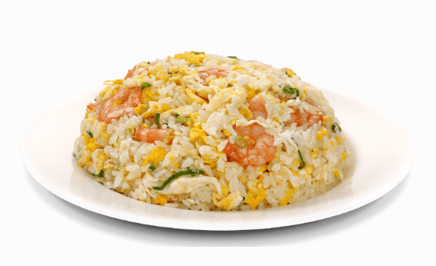
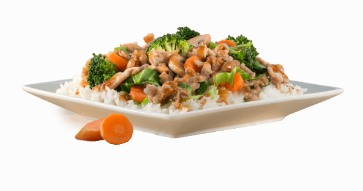

WHAT WE PRODUCE?




In M.P. rice is grown in the area of about 1929.976 thousand ha with production of 5360.905 thousand tons and productivity 2789 kg/ha in the year 2013-14, which is far below than the average national productivity (3623 kg/ha) (Gol 2015).Amongst different districts Balaghat (13.04%) had the highest area of rice followed by Seoni (7.42%), Mandla (6.71%), Rewa (6.40%), Katni (5.75%), Satna (5.70%), Anuppur (5.53%), Shahdol (5.28%), Jabalpur (4.35%), Dindori (4.29%), Sidhi (3.79%), Raisen (3.17 %), Damoh (3.16%), Gwalior (2.95%), Panna (2.92%), Hoshangabad (2.91%), Umariya (2.49%), Singroli (2.48%), Betul (2.25%), Chhindwara (1.09%), Sehore (1.06 %), Narsingpur (0.98%), Sheopur Kalan (0.90%), Shivpuri (0.70%), Tikamgarh (0.65%), Jhabua (0.65%), Chhatarpur (0.60%).
These 25 districts out of 51 covered 97.23 per cent of rice area of the state. The remaining 24 districts covered only 2.77 per cent of the total rice area In case of production maximum share was found in Balaghat (12.28%) district and minimum share was found in Chhatarpur district (0.28%) in the state. In case of productivity all the districts comes under below average of the state except Seoni, Rewa, Katani, Satna, Shahdol, Jabalpur, Raisen, Gwalior, Hoshangabad, Sehore, Narsingpur, Sheopur Kalan And Shivpuri.
ARNA AGRO FOOD LLP Basmati rice being a rich and unforgettable blend of tradition and exotic produce optimizes the spirit of a unique and incredible India. We bring the finest of basmati rice to the global palate by bringing unbridled joy to the faces of millions of our consumers worldwide. Focused quality of highest order and undying faith, ARNA AGRO FOOD LLP has stormed to new heights and emerged as an undisputed market leader. ASCW is one of the largest rice manufacturing companies of India by any standards. Backed by a team of visionaries and committed professionals the company has carved a niche for itself and is all set to acquire new ventures world over.

Arna Agro Food's Mogra Rice has been an integral part of different rice recipes in every Indian household. It is processed under the supervision of experts.It's distinctly aromatic and flavorful variant will take care of your inclination and make every meal memorable.

Arna Agro Food's Basmati Rice is budget-friendly for everyday use and makes ordinary meals delightful. It is defined by its broken Basmati grains and distinguished Basmati aroma and texture. It is For those who like to include rice in their daily meal consumption.